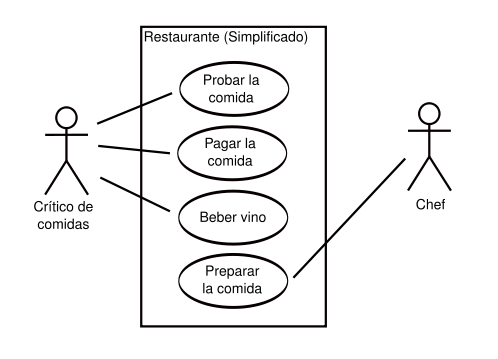
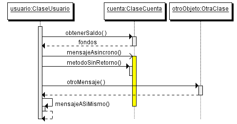

Documentación del proyecto
Adolfo Sanz De Diego
Junio de 2011
Introducción
- La documentación de proyectos va a depender mucho de la empresa en general y del departamento de informática en particular.
- La tendencia es documentar lo mínimo imprescindible pues "el código debería ser la documentación"
- En mi experiencia profesional he usado:
- Diagramas de Casos de Usos (UML)
- Diagramas de Entidad-Relación
- Diagramas de Clases (UML)
- Diagramas de Secuencia (UML)
- Diagramas de Flujo
- Diagramas de Actividades (UML)
Diagramas de Casos de Usos
- Muestran de forma simplificada, los actores que interactúan con el sistema, y las acciones que dichos actores pueden realizar en el sistema.

Diagramas de Entidad-Relación
- Describen las entidades relevantes de un sistema mostrando sus interrelaciones y propiedades.

Diagramas de Clases
- Describe las clases de un programa mostrando sus interrelaciones y propiedades.

Diagramas de Secuencia
- Muestra la interacción de un conjunto de objetos en una aplicación a través del tiempo y se modela para un caso de uso.

Diagramas de Flujo
- Representan el flujo de ejecución mediante flechas que conectan los puntos de inicio y fin.

Diagramas de Actividades
- Representan el flujo de ejecución mediante flechas que conectan los puntos de inicio y fin.

/